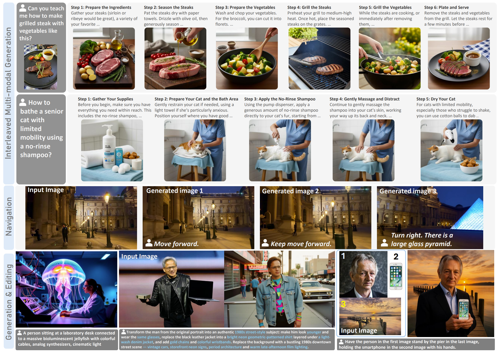

DuoGen: Towards General Purpose Interleaved Multimodal Generation
CVPR 2026 Highlight
DuoGen enables general-purpose interleaved multimodal generation by fusing a pretrained MLLM with a video-pretrained DiT. Leveraging a curated 298k-sample dataset, DuoGen significantly outperforms open-source baselines in visual fidelity and consistency and achieves performance comparable to Nano-banana.